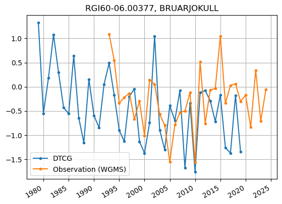
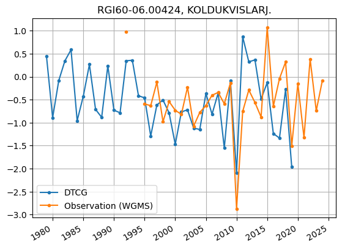
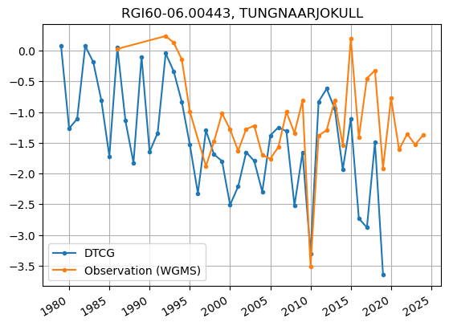
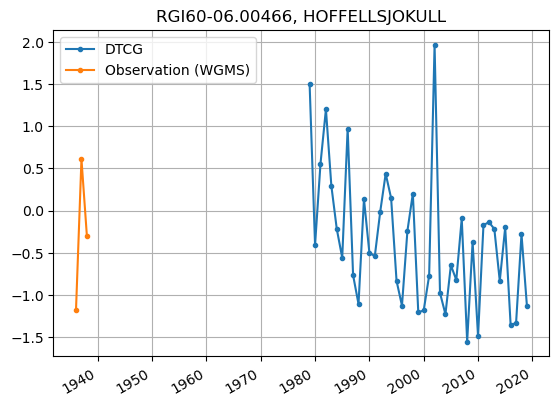
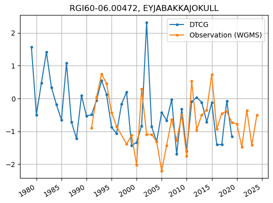
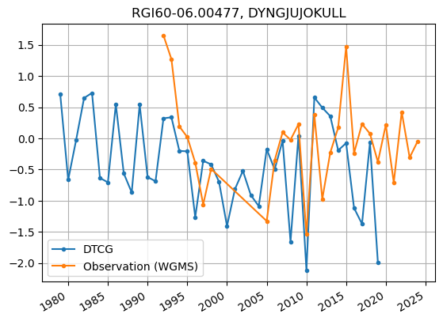

Cryosat - model comparison in Iceland#
from oggm import utils, workflow, tasks, DEFAULT_BASE_URL, cfg
import yaml
import pandas as pd
import numpy as np
import matplotlib.pyplot as plt
Load Vatnajökull rgi_ids#
dtcf_url = 'https://cluster.klima.uni-bremen.de/~dtcg/test_files/case_study_regions/iceland/'
fp_rgi_ids = utils.file_downloader(dtcf_url + 'vatnajokull_rgi_ids.yml')
with open(fp_rgi_ids, 'r') as yaml_file:
rgi_ids = yaml.safe_load(yaml_file)['rgi_ids']
get preprocessed data of OGGM#
cfg.initialize(logging_level='ERROR')
working_dir = utils.get_temp_dir('working_dir')
cfg.PATHS['working_dir'] = working_dir
gdirs = workflow.init_glacier_directories(
rgi_ids, # which glaciers?
prepro_base_url=DEFAULT_BASE_URL, # where to fetch the data?
from_prepro_level=4, # what kind of data?
prepro_border=80 # how big of a map?
)
2025-01-31 11:15:16: oggm.cfg: Reading default parameters from the OGGM `params.cfg` configuration file.
2025-01-31 11:15:16: oggm.cfg: Multiprocessing switched OFF according to the parameter file.
2025-01-31 11:15:16: oggm.cfg: Multiprocessing: using all available processors (N=10)
2025-01-31 11:15:18: oggm.workflow: init_glacier_directories from prepro level 4 on 118 glaciers.
2025-01-31 11:15:18: oggm.workflow: Execute entity tasks [gdir_from_prepro] on 118 glaciers
2025-01-31 11:15:18: oggm.workflow: WARNING: you are trying to run an entity task on 118 glaciers with multiprocessing turned off. OGGM will run faster with multiprocessing turned on.
Elevation change comparison#
Redo run for getting monthly output and load data#
cfg.PARAMS['continue_on_error'] = True
workflow.execute_entity_task(tasks.run_from_climate_data, gdirs,
init_model_filesuffix='_spinup_historical',
init_model_yr=1979,
store_monthly_step=True,
ys=1979, ye=2020,
mb_elev_feedback='monthly',
output_filesuffix='_spinup_historical_monthly')
ds_monthly = utils.compile_run_output(gdirs, input_filesuffix='_spinup_historical_monthly')
2025-01-31 11:15:38: oggm.cfg: PARAMS['continue_on_error'] changed from `False` to `True`.
2025-01-31 11:15:38: oggm.workflow: Execute entity tasks [run_from_climate_data] on 118 glaciers
2025-01-31 11:15:38: oggm.workflow: WARNING: you are trying to run an entity task on 118 glaciers with multiprocessing turned off. OGGM will run faster with multiprocessing turned on.
2025-01-31 11:15:42: oggm.core.flowline: AttributeError occurred during task run_from_climate_data_spinup_historical_monthly on RGI60-06.00387: 'Dataset' object has no attribute 'time'
2025-01-31 11:16:14: oggm.utils: Applying global task compile_run_output on 118 glaciers
2025-01-31 11:16:14: oggm.utils: Applying compile_run_output on 118 gdirs.
calculate modelled elevation change#
volume_total = ds_monthly.sum(dim='rgi_id').volume
# it is a bit unclear which basline was used by the observation
# from the meta_data: "average of the first 5 months (all data pre-2011)"
baseline_volume = np.mean(volume_total.sel(time=slice(2011, 2011.5)))
# divide by RGI area, which is the same area as used by the creation of the observation
rgi_area = 0
for gdir in gdirs:
rgi_area += gdir.rgi_area_m2
# finally the calculation of the modelled elevation change
model_elev = (volume_total - baseline_volume) / rgi_area
Load observations of elevation change#
obs_file = utils.file_downloader(dtcf_url + 'averaged_grid.csv')
df_obs_elev = pd.read_csv(obs_file, index_col=1)
df_obs_elev.index = pd.to_datetime(df_obs_elev.index)
df_obs_elev = df_obs_elev['changes_t0'] # only keep average which is used for comparision
plot elevation change observed vs. modelled#
fig, ax = plt.subplots(1, 1)
df_obs_elev.plot(ax=ax, label='Observations (CryoSat-2)')
years, months = utils.floatyear_to_date(ds_monthly.time)
ax.plot(pd.to_datetime({'year': years, 'month': months, 'day': 1}),
model_elev,
label='DTCG')
ax.set_ylabel('Cumulative monthly change [m]')
ax.legend()
ax.grid('on')
ax.set_ylim([None, 3])
ax.set_title('Vatnajökull elevation change')
Text(0.5, 1.0, 'Vatnajökull elevation change')
WGMS comparison#
load WGMS data#
fp_wgms = utils.file_downloader(dtcf_url + 'WGMS_MB-DTC-Glaciers.csv')
wgms_data = pd.read_csv(fp_wgms)
help function to access WGMS data#
# conversions between wgms ids and rgi ids
fp_wgms_ids_conversion = utils.file_downloader(dtcf_url + 'glacier_id_lut.csv')
df_wgms_ids = pd.read_csv(fp_wgms_ids_conversion)
def get_wgms_from_rgi(rgi_id):
if rgi_id in df_wgms_ids['RGI60_ID'].values:
return df_wgms_ids[df_wgms_ids['RGI60_ID'] == rgi_id]['WGMS_ID'].item()
else:
return None
def get_rgi_from_wgms(wgms_id):
if wgms_id in df_wgms_ids['WGMS_ID'].values:
return df_wgms_ids[df_wgms_ids['WGMS_ID'] == wgms_id]['RGI60_ID'].item()
else:
return None
def get_wgms_mb_observation(rgi_id):
'''
Returns (mb_DataFrame, Glacier name)
'''
wgms_id = get_wgms_from_rgi(rgi_id)
# only not None if this glacier is a WGMS glacier
if wgms_id:
# check if we have some data
if wgms_id in wgms_data['glacier_id'].values:
wgms_glacier_data = wgms_data[wgms_data['glacier_id'] == wgms_id]
df_wgms_glacier_data = pd.DataFrame(
{'annual_balance': wgms_glacier_data['annual_balance'].values},
# ignoring hydro dates for now, as it is also what the model does
index=pd.to_datetime(wgms_glacier_data['year'].values.astype(str)),
)
return df_wgms_glacier_data, wgms_glacier_data['glacier_id.short_name'].values[0]
open modelled data#
ds_annual = utils.compile_run_output(gdirs, input_filesuffix='_spinup_historical')
2025-01-31 11:16:29: oggm.utils: Applying global task compile_run_output on 118 glaciers
2025-01-31 11:16:29: oggm.utils: Applying compile_run_output on 118 gdirs.
function for calculating modelled mb#
def get_smb(ds, rgi_id):
volume = ds.loc[{'rgi_id': rgi_id}].volume.values
area = ds.loc[{'rgi_id': rgi_id}].area.values
smb = (volume[1:] - volume[:-1]) / area[1:] * cfg.PARAMS['ice_density'] / 1000
return smb
Plot WGMS and modelled mb for all available glaciers#
for gdir in gdirs:
wgms_mb = get_wgms_mb_observation(gdir.rgi_id)
if wgms_mb is not None:
fig, ax = plt.subplots(1, 1)
# add modelled smb
ax.plot(pd.to_datetime({'year': ds_annual.time[:-1], 'month': 1, 'day': 1}),
get_smb(ds_annual, gdir.rgi_id),
'.-',
label='DTCG',
)
# add observation
wgms_mb[0]['annual_balance'].plot(ax=ax, marker='.',
label='Observation (WGMS)')
ax.set_title(f'{gdir.rgi_id}, {wgms_mb[1]}')
ax.legend()
ax.grid('on')
plt.show()





